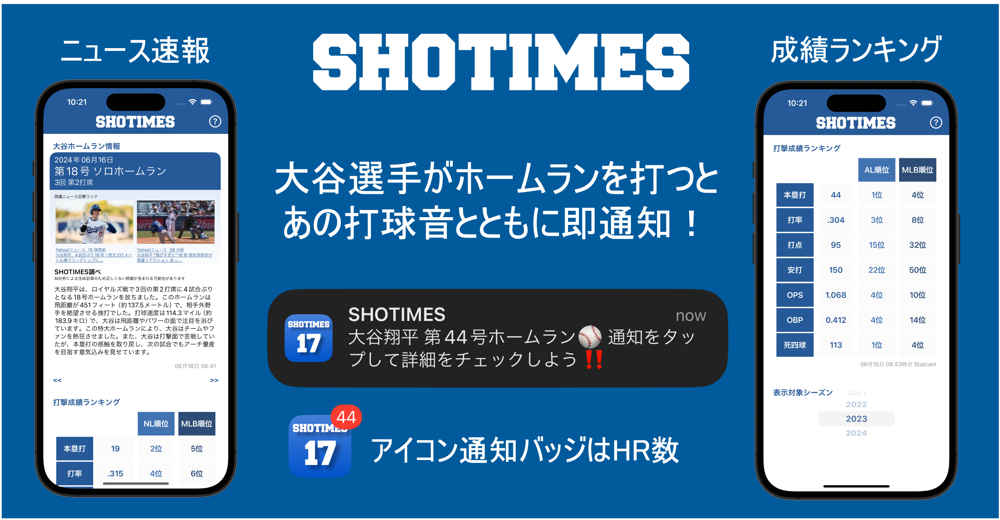

今すぐ無料でダウンロード！
~ 2024年7月13日 Android版アプリが公開されました
アプリの提供する機能の詳細
プッシュ通知
大谷選手がホームランを打つとすぐにプッシュ通知が来ます。通知音はみなさん大好きなあの強烈な打球音です！
ホームラン炸裂から最速10秒、遅くとも1分以内には通知が来ます*。
試合日程・日々の成績
所属チームの試合日程や、試合ごとの大谷選手の成績がカード形式でサクサク見れます。左にスワイプすれば過去の情報を、右にスワイプすれば未来の試合予定をチェックできます。

ホームランニュース
どんなホームランだったか？ここを見れば一目瞭然です**。前回のホームランはいつだったっけ？そんな時は左にスワイプ。大谷選手の打ったホームランごとに記事セットがカード化されていきます。
成績情報
MLBランキングは？ホームランだけでなく打率やOPSなども知りたい。メジャーリーグ移籍以降の年単位の主要な成績とランキングをいつでも見れます。

大谷選手がホームランを打った際のアプリのプッシュ通知紹介
プッシュ通知
大谷選手がホームランを打つとすぐにプッシュ通知が来ます。通知音はみなさん大好きなあの強烈な打球音です！
ホームラン炸裂から最速10秒、遅くとも1分以内には通知が来ます*。
試合日程・日々の成績
所属チームの試合日程や、試合ごとの大谷選手の成績がカード形式でサクサク見れます。左にスワイプすれば過去の情報を、右にスワイプすれば未来の試合予定をチェックできます。
ホームランニュース
どんなホームランだったか？ここを見れば一目瞭然です**。前回のホームランはいつだったっけ？そんな時は左にスワイプ。大谷選手の打ったホームランごとに記事セットがカード化されていきます。
成績情報
MLBランキングは？ホームランだけでなく打率やOPSなども知りたい。メジャーリーグ移籍以降の年単位の主要な成績とランキングをいつでも見れます。